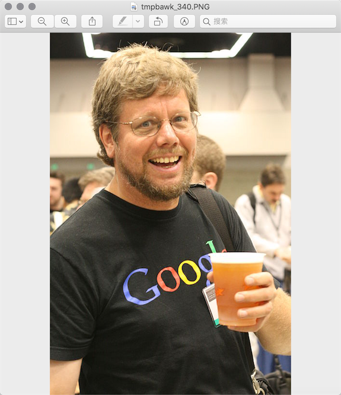
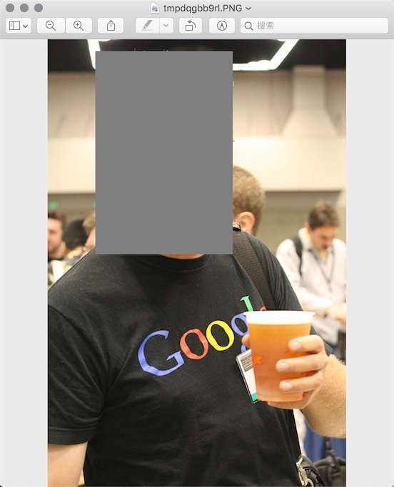

图像和办公文档处理
用程序来处理图像和办公文档经常出现在实际开发中，Python的标准库中虽然没有直接支持这些操作的模块，但我们可以通过Python生态圈中的第三方模块来完成这些操作。
操作图像
计算机图像相关知识
- 颜色。如果你有使用颜料画画的经历，那么一定知道混合红、黄、蓝三种颜料可以得到其他的颜色，事实上这三种颜色就是被我们称为美术三原色的东西，它们是不能再分解的基本颜色。在计算机中，我们可以将红、绿、蓝三种色光以不同的比例叠加来组合成其他的颜色，因此这三种颜色就是色光三原色，所以我们通常会将一个颜色表示为一个RGB值或RGBA值（其中的A表示Alpha通道，它决定了透过这个图像的像素，也就是透明度）。
| 名称 | RGBA值 | 名称 | RGBA值 |
|---|---|---|---|
| White | (255, 255, 255, 255) | Red | (255, 0, 0, 255) |
| Green | (0, 255, 0, 255) | Blue | (0, 0, 255, 255) |
| Gray | (128, 128, 128, 255) | Yellow | (255, 255, 0, 255) |
| Black | (0, 0, 0, 255) | Purple | (128, 0, 128, 255) |
- 像素。对于一个由数字序列表示的图像来说，最小的单位就是图像上单一颜色的小方格，这些小方块都有一个明确的位置和被分配的色彩数值，而这些一小方格的颜色和位置决定了该图像最终呈现出来的样子，它们是不可分割的单位，我们通常称之为像素（pixel）。每一个图像都包含了一定量的像素，这些像素决定图像在屏幕上所呈现的大小。
用Pillow操作图像
Pillow是由从著名的Python图像处理库PIL发展出来的一个分支，通过Pillow可以实现图像压缩和图像处理等各种操作。可以使用下面的命令来安装Pillow。
pip install pillow
Pillow中最为重要的是Image类，读取和处理图像都要通过这个类来完成。
>>> from PIL import Image
>>>
>>> image = Image.open('./res/guido.jpg')
>>> image.format, image.size, image.mode
('JPEG', (500, 750), 'RGB')
>>> image.show()

- 剪裁图像
```Python
image = Image.open('./res/guido.jpg') rect = 80, 20, 310, 360 image.crop(rect).show() ```
- 生成缩略图
```Python
image = Image.open('./res/guido.jpg') size = 128, 128 image.thumbnail(size) image.show() ```

- 缩放和黏贴图像
```Python
image1 = Image.open('./res/luohao.png') image2 = Image.open('./res/guido.jpg') rect = 80, 20, 310, 360 guido_head = image2.crop(rect) width, height = guido_head.size image1.paste(guido_head.resize((int(width / 1.5), int(height / 1.5))), (172, 40)) ```
- 旋转和翻转
```Python
image = Image.open('./res/guido.png') image.rotata(180).show() image.transpose(Image.FLIP_LEFT_RIGHT).show() ```

- 操作像素
```Python
image = Image.open('./res/guido.jpg') for x in range(80, 310): ... for y in range(20, 360): ... image.putpixel((x, y), (128, 128, 128)) ... image.show() ```

- 滤镜效果
```Python
from PIL import Image, ImageFilter
image = Image.open('./res/guido.jpg') image.filter(ImageFilter.CONTOUR).show() ```

处理Excel电子表格
Python的openpyxl模块让我们可以在Python程序中读取和修改Excel电子表格，当然实际工作中，我们可能会用LibreOffice Calc和OpenOffice Calc来处理Excel的电子表格文件，这就意味着openpyxl模块也能处理来自这些软件生成的电子表格。关于openpyxl的使用手册和使用文档可以查看它的官方文档。
处理Word文档
利用python-docx模块，Pytho 可以创建和修改Word文档，当然这里的Word文档不仅仅是指通过微软的Office软件创建的扩展名为docx的文档，LibreOffice Writer和OpenOffice Writer都是免费的字处理软件。
处理PDF文档
PDF是Portable Document Format的缩写，使用.pdf作为文件扩展名。接下来我们就研究一下如何通过Python实现从PDF读取文本内容和从已有的文档生成新的PDF文件。